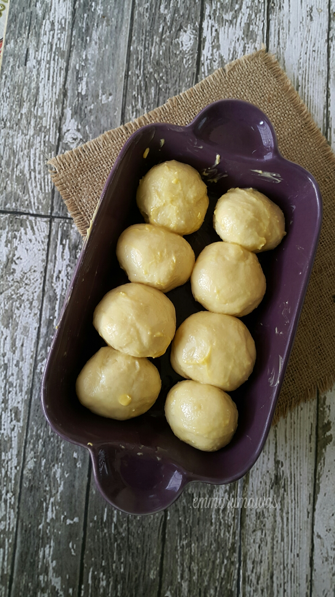
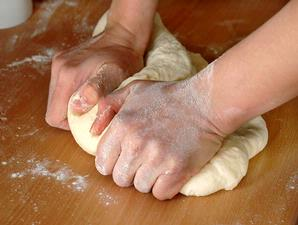
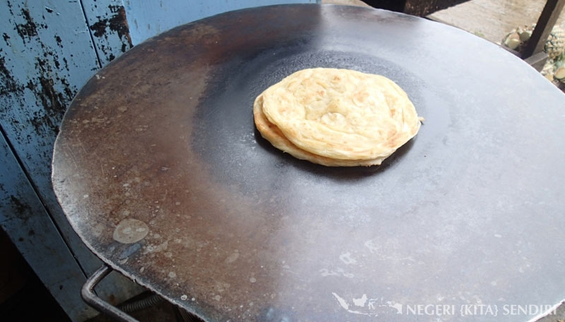

RESEP KUE MARYAM

BAHAN-BAHAN:
- 250 gr tepung terigu
- 1 butir telur
- 3 sdm margarin,lelehkan
- 100 ml air hangat
- 2 sdm susu bubuk(optional)
- 1/2 sdt garam
- margarin leleh untuk olesan
- minyak untuk merendam
LANGKAH-LANGKAH:
- Campur Semua Bahan Jadi Satu

- Uleni Adonan Sampai Kalis,Jangan Lengket Ya

- Kalisnya Adonan Canai Tidak Sekalis Adonan Roti ya
